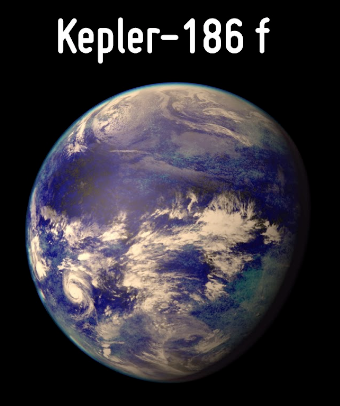
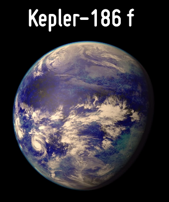
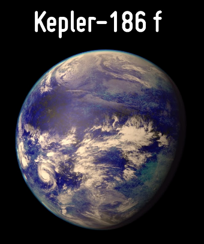

Identificado como TOI 700 e, ele está em uma "zona habitável", isto é, está em uma região de seu sistema
planetário que permite a presença de água líquida em sua superfície,
viabilizando a existência de vida. Ele
integra o sistema de planetas que orbita a estrela anã vermelha TOI
700. A descoberta foi anunciada durante a 241ª reunião da Sociedade Americana de Astronomia na cidade de
Seattle, nos EUA, em 10 de janeiro.
Para descobrir um planeta parecido com o nosso, os astrônomos podem procurar uma estrela que se pareça com o sol. Eles fazem isso usando equipamentos que captam a luz da estrela e conseguem identificar os elementos químicos que a formam. Feito isso, se as características da estrela encontrada forem parecidas com as vistas no sol, é possível que um astro parecido com a Terra esteja ao seu redor.
A técnica que é mais usada para descobrir novos planetas é medindo a velocidade radial da estrela. Essa técnica é
conhecida como efeito Doppler e analisa a velocidade em que cada estrela se move para perto ou
para longe da
Terra, além de também analisar a gravidade do planeta que a puxa para frente e para trás. Então, o telescópio
captura a luz da estrela. Essa luz depois passa em um espectrógrafo, que é um instrumento
que mostra a
posição das linhas que formam a luz da estrela.
